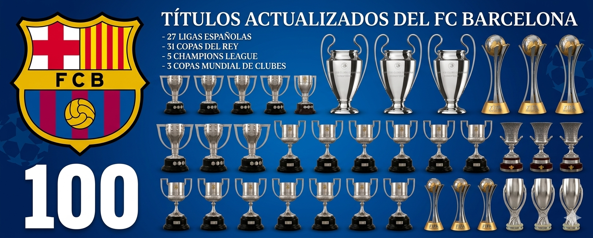

-
Historia
Escudo

Fundado el 29 de noviembre de 1899 por Joan Gamper en Barcelona, el FC Barcelona nació como un club impulsado por suizos, británicos y catalanes. Conocido como "Més que un Club" por su fuerte arraigo a la identidad catalana, es una entidad propiedad de sus socios. A lo largo de su historia, ha superado momentos críticos, como la Guerra Civil Española, consolidándose como una potencia mundial del fútbol con hitos como el "Dream Team" y la era de Messi. Estadio

Fundado el 29 de noviembre de 1899 por Joan Gamper en Barcelona, el FC Barcelona nació como un club impulsado por suizos, británicos y catalanes. Conocido como "Més que un Club" por su fuerte arraigo a la identidad catalana, es una entidad propiedad de sus socios. A lo largo de su historia, ha superado momentos críticos, como la Guerra Civil Española, consolidándose como una potencia mundial del fútbol con hitos como el "Dream Team" y la era de Messi. Ciudad

Fundado el 29 de noviembre de 1899 por Joan Gamper en Barcelona, el FC Barcelona nació como un club impulsado por suizos, británicos y catalanes. Conocido como "Més que un Club" por su fuerte arraigo a la identidad catalana, es una entidad propiedad de sus socios. A lo largo de su historia, ha superado momentos críticos, como la Guerra Civil Española, consolidándose como una potencia mundial del fútbol con hitos como el "Dream Team" y la era de Messi.
Titulos

103-

28 Ligas
-

32 Copas del Rey
-

5 Champions League
-

16 Supercopas
-

3 Mundiales de Clubes
-

4 Supercopas de Europa
-

5 Europa League